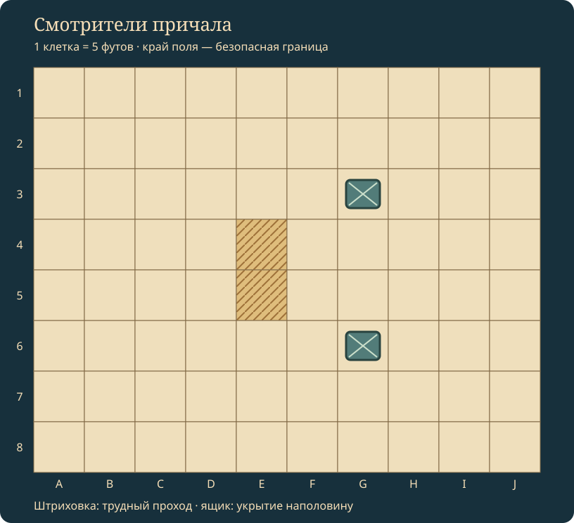
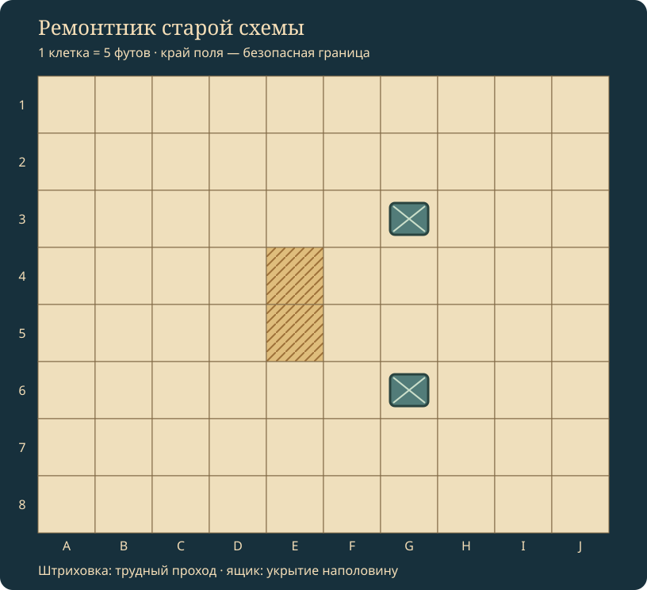
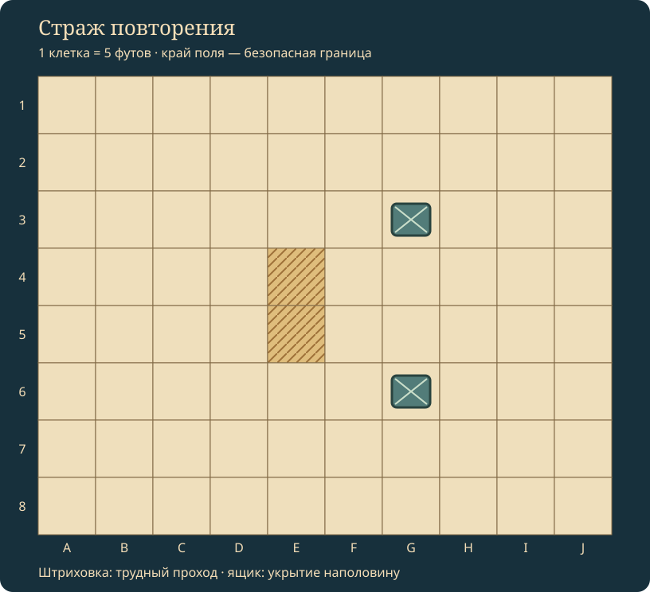
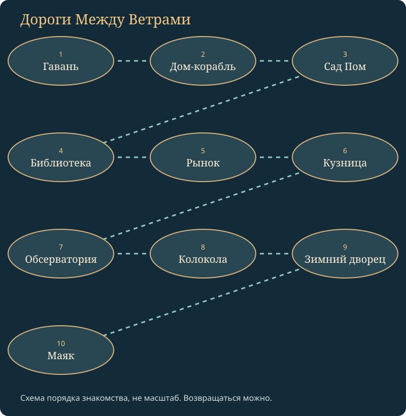

Места для смелых идей
Три короткие встречи для троих героев. Сначала предлагайте выход без боя. Все тактические клетки совпадают с native package; декорации вне сетки не создают дополнительных препятствий.
Листы фигур для печатиСмотрители причала
Только если игроки выбрали бой после предупреждения. Мирные пути: билет на сегодня, ручной рычаг, служебный вход.



Начало: герои B3, B4, B5; четвёртый — B6. Автоматы I3 и, если их два, I6. Обозначения на карте используют буквы и номера с единицы; пакет хранит координаты с нуля.
Смотритель причала: 10 HP, защита 11; Помощник смотрителя: 10 HP, защита 11
Одна атака за ход, мягкий упор 1d4 + 1, скорость 20 футов. Смотрители: +2 к атаке; ремонтник и страж: +3. Автомат заранее предупреждает, движется к ближайшему нарушителю и не добивает лежащих. Решения NPC подтверждает ведущий штатно.
После одного раунда снова предложите рычаг, разговор или отступление. При снижении до половины HP автомат останавливается на проверку: это окно для мирного решения, а не автоматический конец боя. Ведущий завершает встречу обычной командой. На 0 HP механизм выключается без жестоких подробностей.
Ремонтник старой схемы
Необязательный бой при попытке автомата вернуть мост к старой форме. Можно снять шаблон, отключить питание или обойти.



Начало: герои B3, B4, B5; четвёртый — B6. Автоматы I3 и, если их два, I6. Обозначения на карте используют буквы и номера с единицы; пакет хранит координаты с нуля.
Латунный ремонтник: 22 HP, защита 12
Одна атака за ход, мягкий упор 1d4 + 1, скорость 20 футов. Смотрители: +2 к атаке; ремонтник и страж: +3. Автомат заранее предупреждает, движется к ближайшему нарушителю и не добивает лежащих. Решения NPC подтверждает ведущий штатно.
После одного раунда снова предложите рычаг, разговор или отступление. При снижении до половины HP автомат останавливается на проверку: это окно для мирного решения, а не автоматический конец боя. Ведущий завершает встречу обычной командой. На 0 HP механизм выключается без жестоких подробностей.
Страж повторения
Необязательная защита старого шаблона. Новая схема, ручное отключение и обход остаются доступны. Победа не выбирает финал.



Начало: герои B3, B4, B5; четвёртый — B6. Автоматы I3 и, если их два, I6. Обозначения на карте используют буквы и номера с единицы; пакет хранит координаты с нуля.
Страж повторения: 32 HP, защита 13
Одна атака за ход, мягкий упор 1d4 + 1, скорость 20 футов. Смотрители: +2 к атаке; ремонтник и страж: +3. Автомат заранее предупреждает, движется к ближайшему нарушителю и не добивает лежащих. Решения NPC подтверждает ведущий штатно.
После одного раунда снова предложите рычаг, разговор или отступление. При снижении до половины HP автомат останавливается на проверку: это окно для мирного решения, а не автоматический конец боя. Ведущий завершает встречу обычной командой. На 0 HP механизм выключается без жестоких подробностей.
Острова

Вечера 1–2 дают дом и задачу. Острова 3–8 можно посещать в другом порядке: документы указывают сразу несколько адресов. Вечер 9 — совет и передышка. 10–11 — встреча с Северином и решение. 12 — последствия и праздник. Не запирайте путь к финалу за сбором всех сувениров.